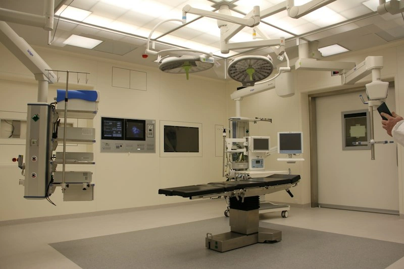

Healthcare That Puts You First
Experience comprehensive medical excellence where advanced diagnostics, dedicated physician specialists, and coordinated patient care unite seamlessly for your well-being.
85+ Specialists
Board-certified experts
Digital Records
Instant patient access
24/7 Assistance
Prompt clinical triage
Medical Departments
Dedicated specialty centers staffed by multidisciplinary medical teams using cutting-edge medical technologies.
Cardiology
Comprehensive cardiovascular care including preventive screenings, non-invasive imaging, and advanced cardiac catheterization.
Explore SpecialtyNeurology
Specialized diagnosis and treatment for acute stroke, epilepsy, neuro-muscular conditions, and spine rehabilitation.
Explore SpecialtyOrthopedics
State-of-the-art robotic joint replacements, sports injury arthroscopy, and coordinated physical therapy recovery programs.
Explore Specialty Child Health
Child Health
Pediatrics
Compassionate care for infants, children, and adolescents, from milestone assessments to immunizations and urgent care.
Explore SpecialtyGeneral Medicine
Whole-person preventative care, lifestyle consultation, chronic metabolic management, and comprehensive family health.
Explore Specialty
Imaging & LabDiagnostics
High-resolution 3T MRI, 128-slice CT scans, automated clinical chemistry, and rapid pathology reporting under one roof.
Explore SpecialtyMeet Our Doctors
Board-certified clinicians committed to compassionate, patient-centered healthcare delivery.

Dr. Sarah Jenkins
MD, FACC, Harvard Medical School

Dr. Rajesh Sharma
MBBS, MS, MCh (Neurosurgery), AIIMS

Dr. Marcus Vance
MD, FRCS (Orth), Johns Hopkins
A Clear 3-Step Journey
Experience a frictionless booking pathway designed around your personal schedule.
Choose Department
Select your required medical specialty based on your symptoms or preventative health goals.
Select Specialist
Review physician credentials, sub-specializations, and patient ratings to find your best fit.
Confirm Time Slot
Pick an available morning or afternoon consultation slot with instant digital confirmation.
Comprehensive Healthcare Services
Holistic healthcare continuum spanning preventive checks, diagnostics, and longitudinal care.
Diagnostics & Imaging
State-of-the-art MRI, digital X-rays, ultrasound, and echocardiography providing reliable diagnostic certainty.
Learn MoreLaboratory Services
Automated clinical pathology, biochemistry, hematology, and genomic testing with rapid turnaround.
Learn MorePreventive Health Checkups
Customized annual wellness packages tailored to age, gender, and personal risk markers.
Learn MoreSpecialist Consultations
In-depth, unhurried physician evaluations covering complex diagnoses and second opinions.
Learn MoreFollow-up & Chronic Care
Structured continuous monitoring programs for hypertension, diabetes, asthma, and arthritis.
Learn MoreCoordinated Emergency Care
24/7 acute trauma assessment, certified resuscitation suites, and immediate clinical triage.
Learn MoreDigital Patient Care, Always In Reach
Manage every aspect of your healthcare journey through our unified patient portal. Never worry about misplacing physical records or prescriptions again.
Appointment History & Reminders
Review upcoming consultations, past visit logs, and automated appointment reminders.
Direct Medical Records Access
Securely view lab test results, imaging reports, and physician consultation notes in real time.
Digital Prescriptions & Refills
Electronic prescription management with direct instructions and medication tracking.
Direct Physician Communication
Communicate follow-up updates with your care team between scheduled appointments.
Why Patients Choose Us
Built upon decades of combined clinical expertise, modern infrastructure, and human compassion.
Qualified Specialists
Internationally accredited physicians and surgeons adhering to rigorous clinical guidelines.
Coordinated Care
Our multidisciplinary team works as one unit so you never have to repeat your medical history.
Accessible Records
Instant digital access to your clinical observations and lab results whenever you need them.
Organized Scheduling
Zero overbooking policy ensuring dedicated, focused consultation time with your doctor.
Patient Experiences
Real experiences and feedback from individuals who entrusted their recovery to STACKLY Healthcare. (Sample illustrative reviews).
“Dr. Jenkins and the cardiology team handled my treatment with exceptional precision. The appointment booking was seamless, and having my lab reports on my phone gave my family total peace of mind.”
“From diagnosis to surgery and physical therapy, Dr. Marcus Vance coordinated everything brilliantly. I was back walking without discomfort weeks ahead of my expectation.”
“Finding a pediatrician who genuinely listens is rare. Dr. Elena Rostova is patient, thorough, and kind. The clinics are clean, child-friendly, and very well coordinated.”
Health Resources & Guidance
Physician-curated educational articles to help you take proactive charge of your daily wellness.
Understanding Early Indicators of Hypertension
Key lifestyle interventions and monitoring practices to detect and mitigate high blood pressure before complications arise.
Read ArticleAnnual Health Checkups: What Every Adult Needs
A breakdown of vital screening tests by age group, from cholesterol profiling to metabolic markers and bone density.
Read Article
Building Resilient Immunity in Young Children
Practical pediatrician tips on balanced nutrition, seasonal vaccinations, and consistent sleep hygiene for children.
Read ArticlePlease bring a valid photo ID, your previous medical records or imaging disks, and a list of current prescription medications or supplements you are taking.
Yes. You can manage, reschedule, or cancel your booking through the Appointments page or directly via your Patient Portal dashboard with instant updates.
Standard blood biochemistry results are uploaded within 4–6 hours. Advanced pathology and radiological reports are verified by our specialist physicians within 24 hours.
Healthcare at a Glance
Our clinical reach and capacity across departments and regional centers (Illustrative demo statistics).